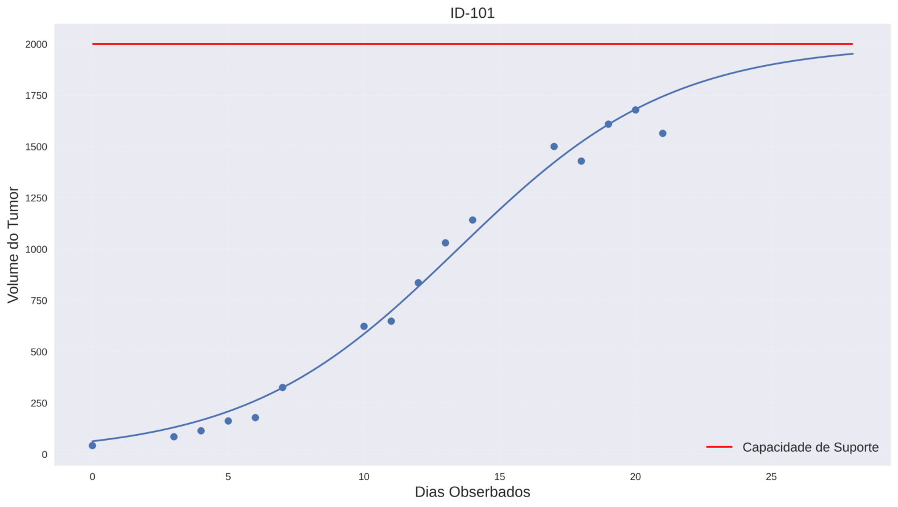

Estou finalizando um Mestrado em Matemática, desenvolvi estudos em modelagem preditiva aplicados ao crescimento de tumores, utilizando Equações Diferenciais Ordinárias de primeira ordem.
Essa experiência consolidou minha base analítica e despertou o interesse em aplicar modelos matemáticos em problemas reais de negócio.
A partir dessa transição, passei a focar em Análise de Dados, Machine Learning e Inteligência Artificial, direcionando meus conhecimentos para previsão de demanda, marketing digital e otimização de vendas no contexto do consumo digital.
Com o objetivo de disponibilizar de forma interativa os resultados obtidos do trabalho, foi desenvolvido um aplicativo web utilizando a plataforma Streamlit, no qual são apresentados os ajustes de curvas, parâmetros estimados e visualizações gráficas associadas aos modelos matemáticos estudados.

Disponível em: Aplicação Web